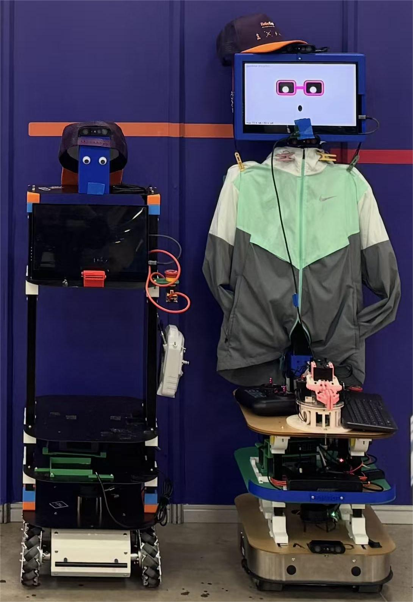
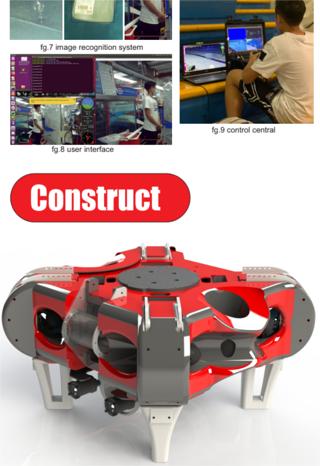
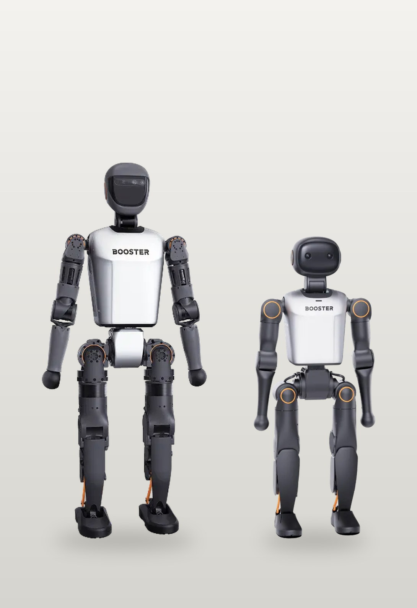

Established 2015 · Macau
Pui Ching Fablab(Macau)
A workshop where students build what they imagine.
A digital fabrication lab operated by Pui Ching Middle School, open to the public — and the home of three student robotics programmes.
Programmes
Three teams
01
Service Robot
Domestic service robots built for the RoboCup@Home league, where machines are asked to work usefully alongside people in a home.
Enter
02
ROV
An autonomous surface vehicle for ecosystem surveillance — water quality monitoring and invasive species management.
Enter
03
Humanoid
PCMS-HRG programmes autonomous humanoid robots on the Booster T1 and K1 platforms, for RoboCup and international competition.
EnterThe Lab
Open to the publicFounded in April 2015, Pui Ching Fablab (Macau) is operated by Macau Pui Ching Middle School. We hope to create a platform where people can meet, share ideas and make them real.
The lab holds equipment such as 3D printers and CNC milling machines, so that the things we design can actually be fabricated — by students working on a competition robot, or by anyone who walks in with an idea.
See the lab on fablabs.io- Founded
- April 2015
- Operated by
- Macau Pui Ching Middle School
- Equipment
- 3D printers, CNC milling machines and more
- Open to the public
- Saturday afternoon · Sunday morning